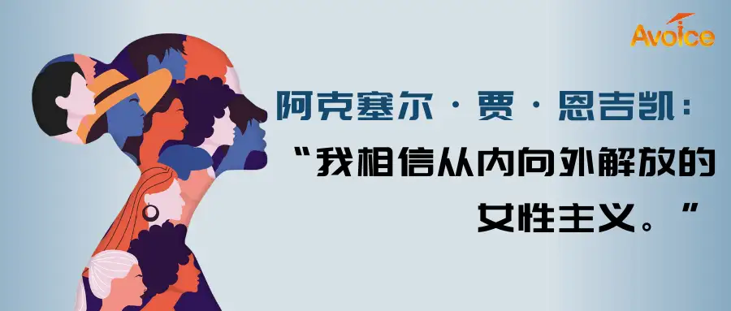
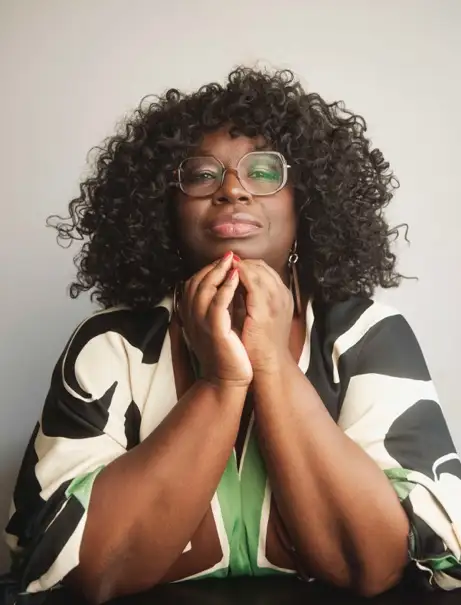
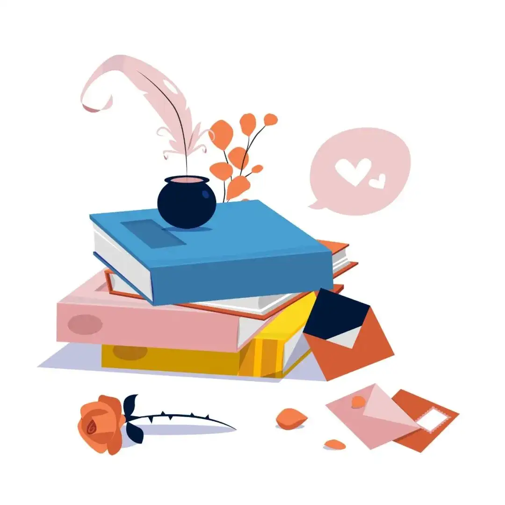
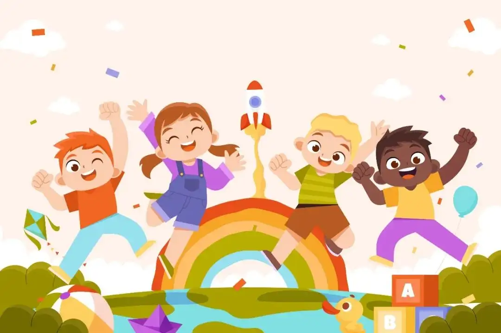
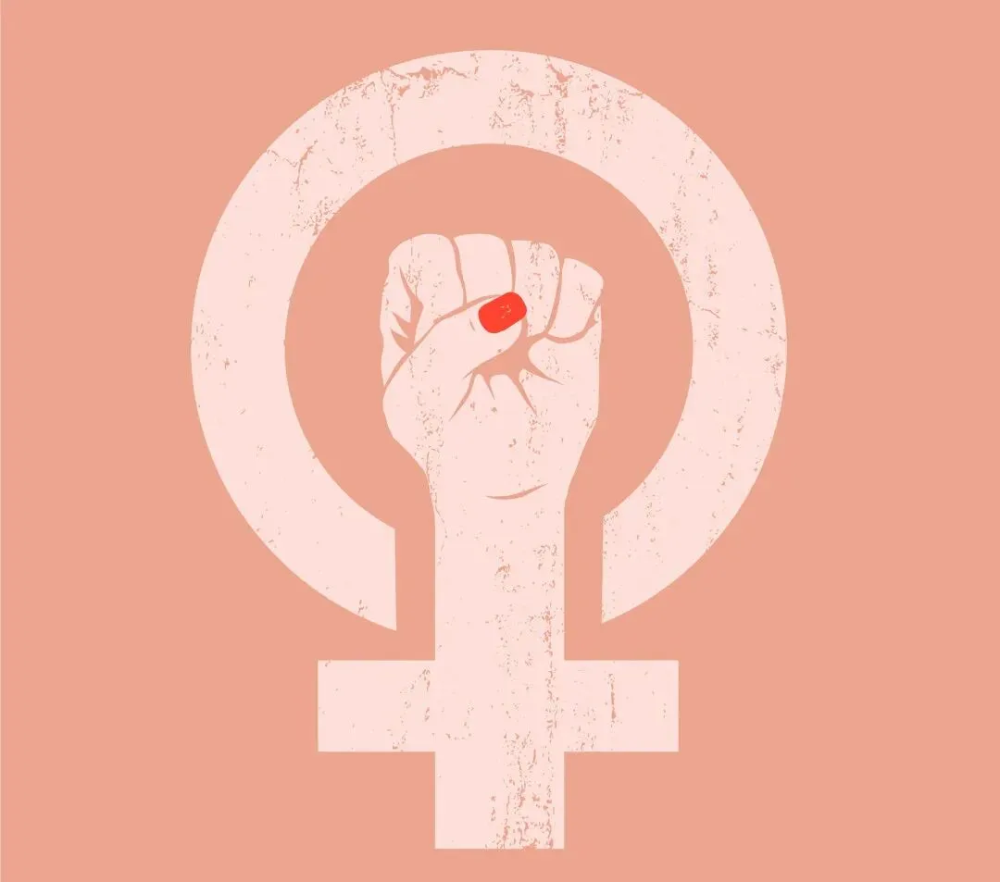

阿克塞尔・贾・恩吉凯
非洲裔喀麦隆人，从小居住在巴黎。作为播客创作者和女性主义专栏作家，2015年，她创办了名叫“让我们谈论女性的快感”的网站，并在2018年又创建了专门讨论黑人妇女亲密关系的极具包容性的播客《自己、我的性和我》。2020年秋，她的第二档播客《沙发上的女孩》，致力于探讨黑人群体中儿童和青少年遭受的性虐待问题。2021年，她出品的第三档致力于探讨1960年代迄今的法语地区黑人女性主义的播客（《我是黑人女性，我不喜欢碧昂斯》），使她成为法国文化广播电台（France Culture）纪录系列的第一位非洲裔播客制作人。
引言
阿克塞尔认为很多人并不理解在个人和情感生活的不同阶段与黑人女性进行对话的价值，谈论自己和我们的亲密关系仿佛是反常的。特别是当你是一名女性的时候。为黑人女性提供谈论诸如情感关系、养育子女和自我构建等明明再普通不过的话题的平台似乎并不多。这也是她创办自己的播客的原因。
亲密关系是通向他人的桥梁。她相信一种从内向外解放的女性主义，这样的解放与女性的自我体现有关、与亲密关系有关、与个人与政治的那个接口有关。同时，在这篇文章中，阿克塞尔还强调了家庭内部对儿童的性暴力的问题，她认为这个话题需要被知晓、被给予更多的关注。
原稿件来源于法国的《Les Ourses à plume》女性主义网络杂志以及《Philosophie Magazine》杂志。以下文章由Avoice语言支持团队的法语组成员翻译。
播客《自己、我的性和我》(Me, My Sexe and I)的创作者阿克塞尔·贾·恩吉凯（Axelle Jah Njiké）主张通过自我的内在实现解放。
她的作品《（黑人）妇女的私密日记》强而有力地讲述了一个喀麦隆裔妇女重新掌控自己命运的故事，将读者带入她的私密生活中，并鼓励读者“在个人的私密生活中实现自我体现，无论是字面意义还是象征意义上”。她将自己的日记归为一种“不信教”的女性主义；也就是说，这种女性主义与她家里的女孩和妇女的故事密不可分。而在她的家族中，这些女性无法享有对自己的身体和性的平等权利。
Q
您是什么时候开始写这本日记的？
我在1990年代末开始写这本书。但当时，为了出版，我不得不同意删除有关妇女出版物的段落。就在这时，发现我这部作品的拉斐尔·索林（Raphaël Sorin）让我感到他是个了不起的人。他当时看着我说：“这很简单，如果你只想显赫一时，你就接受这个交易，让这一章消失。如果你想真正成为一名作家，便原封不动的将这本书出版”。而我真诚地告诉他：我想成为一名作家。他于是说：“坚持下去，属于你的时代终将来临！”
Q
文学是如何成为您心灵的避难所的？
喀麦隆的教学水平非常不错，于是当我来到法国后，读小学一年级时，老师便给了我图书馆的钥匙，让我在其他人学习时去阅读。我如饥似渴地读着小说。我不满意的结尾，我就自己篡改。当我认为女主角可以做出其他选择时，我就在自己的笔记本上重写。渐渐地，我开始记录下我的想法。当我发现《阿内丝·尼恩日记》（Anaïs Nin）时，我才明白，日记其实也是文学的载体。

* 图片来源：freepic
正如我在播客中所说，黑人女性文学让我得以为很多事情冠名。而情色文学让我在被侵犯后夺回了身体的自主权。对我来说，阅读和写作是有助于自我定义的。阅读帮助我走出了阴霾，并使我慢慢接受我所经历的一切，让我的“我”得以建立。
播客中的文学摘录并不是用于装饰。我想为听众提供两种方式来进入我的私密世界：要么选择现实——听播客中出现的人的证词；要么选择虚构——听文学摘录。这两个不同的切入点引出的是同一个话题。
非洲社会总是告诉我们，女性主义是白人妇女的事。
Q
您的作品名为《（黑人）妇女的私密日记》，为什么给“黑人”这个词加上括号？
这本书的标题表明了一种“处境化”的视角。当我谈论我作为一个黑人的经历时，与出生在这里的人的经历是截然不同的。我的背景不同于常人，即使在黑人群体内部，我的视角也是既带有非洲色彩又带有欧洲色彩。我出生在非洲，但我在欧洲长大并接受教育。我在一种不同寻常的家庭环境下长大，我是由两个黑人男子抚养长大的，家庭关系不像普通家庭一样重要。我要逃离这种生活。
我是一位黑人女性，但我曾经更是一个懵懂的小女孩，身处在不寻常的生活模式中，家庭中不断出现暴力。我的第一次性行为并非自愿。能捍卫我的只有我自己。于是，自那日起，我选择了自我。我不仅是黑人，我也是莉莉，我也是阿克塞尔，我也是性暴力和教育暴力的受害者。这就是括号里所指的内容。
Q
为什么“亲密性”和“黑人女性”这两个词很少并列在一起？
当下社会，群体比个人更为重要。而当个人是一位女性时，这常常被视为一种失序。把自己当成一个独立的个体，会给社会带来不稳定。这是我们讨论有关黑人妇女女权时，会听到的批评。人们会对我们说，这是白人妇女做的事情。他们对亚裔或美国原住民妇女做出同样批评。女性在世人眼中一直是一个群体，所以女权倡议任重而道远。
对于一些人来说我不够黑，对于另外一些人来说我不够白。
Q
您在书中说大家都认为“您作为一位非裔女性过于先进了”...
对于一些人来说我不够黑，对于另外一些人来说我不够白。从一开始，我便处于舆论之中。非裔女性需要面对的问题太多太多了...就像“图巴女孩”这个绰号（“toubab”常用于西非，用来指代任何白皮肤的人，无论国籍）。在非洲，女性很难与男性建立亲密关系。鉴于我之前在家的经历，我用了很长一段时间才得以适应这种与非裔男性的亲密关系。但这些问题从不会有人关心。当我寻回亲生父亲时，我才慢慢适应了这种关系，因为终于有人是希望我存于这世间，终于有人是爱我的。
Q
您有好几个出生日期，出生对于您来说，代表了什么呢？
我只出生了一次，却有三个不同的出生日期。一个是正式日期，写在证件上的。但这个日期跟我母亲怀上我的那一天背后的爱情故事并不相符。这些数字伴随着我们的一生，无法抹去。我第二个出生日期指的便是我真正来到这个世界的那一天。最后一个日期可能是我得知我还有一位亲生父亲的那一天了吧。
出生不仅仅是生物学上的事，出生的背后也可以是爱。
Q
亲密关系对于您来说意味着什么？
具体来说，我对每位女性在自己的性别中如何自我体现感兴趣。我相信一种从内向外解放的女性主义。你所做的一切，都与你是谁有关，因此与你母亲和她之前的母亲的故事都有关。我承载了她们的所有，传递她们的愿望对我来说是一种革命性的行为。我一直以来的所作所为是对我母亲和我的先辈们的命运的回应。
亲密关系不是附属品。一切都会发生变化，一切都会被外界的影响穿透，没有什么是密不透风的。这种流动性不是一种危险，相反，它是人类最纯粹的纤维。
在另一次采访中，Axelle Jah Njiké谈到了她的作品《沙发上的女孩》(La fille sur le canapé)，该作品涉及到了一个很现实残酷的问题：针对未成年人的家庭暴力，以及她与黑人女性主义和/或非裔文学的联系以治愈创伤。
Q
有人还没有听说过这档纪录性播客，您能介绍一下它吗？
《沙发上的女孩》是新聆听（Nouvelles Écoutes-法国著名播客平台）“个人与政治”（Intime et Politique）播客中的一个系列节目。我构思了这个播客的情节和内容，涉及到家庭内部对未成年人的性暴力。我通过6个论证，分别来自一个女孩，一些非裔女性和我自己，探讨了黑人社区高度禁忌的童年与青少年时期的侵犯与强奸问题。
Q
《沙发上的女孩》指的是您吗？为什么您需要探索个人和政治？
我是以一个从小遭受性暴力和教育暴力的女孩、女人、公民与母亲的身份来做这个播客的。但我也以黑人女性的身份来做。我希望在围绕性暴力这个问题的对话中我们不要忘记所有那些错综复杂的压迫。针对儿童和青少年的性暴力几乎在每个社会、每个纬度都肆虐着。非裔家庭也不例外。在我看来，这种暴力说明了很多在儿童内部，特别是在社会内部中我们（非裔）家庭，作为一个系统的一般家庭，以及儿童地位的事情。
我想解决超乎我们想象的儿童脆弱性问题，这样的脆弱使他们成为父母和周围成年人的财产。我想阐明对儿童的性暴力不是一个私人或个人问题，而是直指我们的社会组织。我认为在这方面，个人与政治是交织在一起的。

* 图片来源：freepic
Q
您为什么选择以纪录片的形式来做这个家庭内部性暴力受害者的发声平台，进一步深化您的故事的独特性？
现实情况是，根据世卫组织的数据，世界上每5个女孩中就有1个受到童年性暴力，每13个男孩中就有1个受到童年性暴力。 这样的比例可以说是一个灾难。我的故事只描述了其中一部分，我的经历可以作为一个很重要的起点。从我的故事和我们收集的故事中可以清楚地看到，这些性暴力故事会影响我们遇到的人，你遇到的人，以及播客听众遇到的人。我们有广大的受众群体。我不能拘泥于我的故事，因为它远不止于此。我们探讨的是一个系统，一个社会组织，家庭内部的性暴力是如何侵犯儿童的身体，特别是年轻女孩的身体，以及是如何影响了一个孩子的一生。
Q
为什么现在必须这样做？
既然我们已经可以谈论针对成年女性的暴力，那么针对儿童所遭受的也要让大家知道。现在是停止回避问题的时候了。大多数强奸和攻击发生在家庭内部，而不是像我们印象中的发生在外部。受害者年龄越小，施暴者就越容易接近受害者。在70%的案件中，当孩子在6岁以下时，侵犯行为被认定为乱伦。
如今关于针对成年女性的家庭暴力和性暴力的说法在我们的社会中得到了积极传播，这一切少不了#metoo运动的功劳，但那些关于儿童和针对他们的暴力仍然受到巨大的否认。我作为一个关注这个问题的人，很反感，我不明白为什么有双重标准。我们不处理这个问题是在害怕什么？
Q
会有人选择从来不将侵犯她们的人绳之以法，（在反监禁主义的逻辑下）从来不在法庭上讲述她们的遭遇吗？
从获取到的信息来看，确实有部分人说她们觉得没有走司法程序的必要。她们会选择其他的补偿措施，比如在家庭生活中不再接近施暴者，并确保周围的人都清楚她们这样做的原因。她们的容忍是警告。如果发现家里的孩子被施暴了，不管是什么性质的施暴行为，她们一定会采取措施。每个人都尽其所能地保护自己，她们知道走司法程序有时会很艰难，如今很多人也都认为司法程序远远不是解决办法，因为我们往往需要付出巨大的代价。仅靠司法程序来解决性暴力问题是远远不够的，我们首先需要做的是去改变这个社会，而非坐等悲剧发生后才去补救。我们所获得的这些数据，仅仅来自于那些愿意发声的受害者的陈述，还有很多未发声的受害者，所以我们无法去获得在这个问题上真实的数据。
事实上，受害者的数量远比我们想象的多得多。而且，在现实中，如果所有受害者都向司法机关寻求帮助以获得补偿，我们的法律制度是无法应对这样的冲击的。总之，作为身处在这个社会中的集体，我们必须向自己提出“真正的问题”：我们是怎么走到今天这一步的？如果说这个社会的司法系统没有办法去听见我们每一个人的声音，那我们所生活的这个社会，如何能被称作一个社会呢？反监禁主义、恢复性司法和监禁都有它们存在的理由，但是我们不能偏离真正的问题。真正的问题是：这些事情是怎样在我们的家庭和社会中发生的？导致这些问题发生的根源究竟是什么？

* 图片来源：freepic
要意识到，我们现在掌握的所有数据都只是冰山一角！我们每个人都会受到性暴力的影响。这种事情在我们身边的朋友、同事、家庭成员身上都曾经发生过或正在发生。性暴力受害者，他们就在那里，他们在我们之中，他们是和我们一起去参加派对的同事或者最好的朋友，他们是我们的情人或是邻居。遭受性暴力的人具有令人难以想象的普遍性，这种普遍性是可怕的，需要我们深刻反思，这与我们都息息相关。 有些人倾向于认为10000位女孩中只有1位会遭受性暴力，因为性暴力被刊登在头版头条上，是最热门的话题，人们会认为这是一个特殊的、极少发生的事件，这种认知令人愤怒。
事实上，我们想要传达的是，性暴力每天都会发生且无处不在，它会发生在乡村，在学校，在楼上的邻居家里。不需要等到那些轰动的事件发生再去关注性暴力的话题，在我们的身边就会有很多人遭受性暴力，这并不少见。这些事情至少需要被给予和头版头条同等的关注。在过去三四年的时间里，随着这些事情的发生，人们更加愿意去关心关于暴力的话题，特别是性暴力。仅在今年就有4个播客开始讨论这一话题。Charlotte Bienaim é在Arte Radio上为自己创立的播客，Charlotte Pudlowski的《或许在那一夜》（Ou peut-être une nuit），我的《沙发上的女孩》，Clémence Allezard在France Culture上的纪录播客《被侵犯者：一个被压迫的故事》。没有事先计划，也并不互相认识，我们这几年都深深意识到了去讨论这一话题的必要。而且，如果没有过去这四五年中在我们社会中所发生的事情，尤其是美国#metoo反性侵运动，我们不可能目睹这些内容被广泛传播。
Q
您在这一路上遇到过什么坎坷？
集播客的作家、主题、听众于一身，这是一项挑战。即使我对如何带着让大众听见那些特别的声音的决心用第一人称讨论政治驾轻就熟，就像我在我的第一个播客《自己、我的性和我》中做的一样，但现在我所做的是另外一回事。 对于我来说，亲密关系是与他人沟通的桥梁。在性暴力这个问题上，让黑人女性的遭遇被知晓，就是在交流彼此之间的联系以及千种万种将我们连结起来的方式，而这一次，我想通过童年时遭受的性暴力这一主题来实现。我要做的并非将矛头指向黑人社区，带来污名化的结果，把与我们所有人有关的主题占为己有。我想做的是通过将那些往往在叙事中被遗忘或很少被考虑的人纳入对话中，从而让这个问题涵盖更广泛的群体。对我来说，当我们谈论这些问题时，我们必须谈论黑人和年轻的非裔受害者，而且必须以恰当的方式进行。
文章来源：
https://www.philomag.com/articles/axelle-jah-njike-je-crois-en-un-feminisme-qui-emancipe-de-linterieur?check_logged_in=1
https://lesoursesaplumes.info/2021/01/17/la-fille-sur-le-canape-entretien-avec-axelle-jah-njike/
翻译｜Ylies、HanboWang、Chudi、YangHainingSeveline
审校｜Chudi、YangHainingSeveline
排版/封面｜叶蕾
图片来源｜freepic